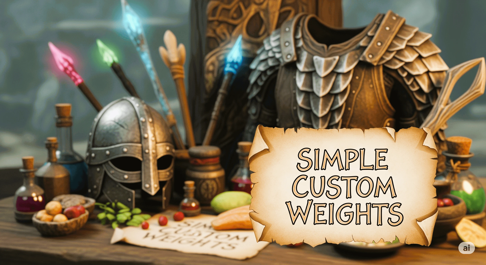

Simple Custom Weights
Adjust the weight of equipment and supplies by category. Keep normal weight with a 1× multiplier, make selected supplies lighter, or choose an exact weight for desktop arrows and bolts.

Get started
- Choose the plugin download for your exact Skyrim version and store edition. Use the matching SKSE and Address Library required by that download.
- Install the complete package with your mod manager, including its Data assets. Back up personal settings before replacing an older mod folder.
- Start Skyrim through SKSE. For these settings, restart Skyrim after saving changes unless the guide describes a separate reload control.
Settings
Edit Data/SKSE/Plugins/SimpleCustomWeights.json. Missing JSON is created at startup; a recognized old INI is imported only while JSON is missing.
The gameplay plugin works on its own. You can edit its settings file with a text editor, or install Prisma UI Settings Menu and its requirements for an optional in-game editor. Press F10, choose the mod, save, and restart Skyrim. The menu definition shipped with a mod is separate from your personal settings file.
| Setting | What it changes |
|---|---|
| Category multipliers | 0.1× to 10×, with 1× in the middle. Notes/letters/recipes, leather/hides, ores/ingots, tools and soul gems have distinct categories. |
| Arrows and bolts | Desktop settings can keep original weight, use the legacy multiplier, or set an exact weight from 0 to 1. Zero makes ammo weightless. |
| Rounding and minimum weight | Apply to multipliers. A rounding amount of 0.01 keeps hundredths. Exact ammo weights bypass these controls. |
| Keys, lockpicks and gold | Keep original weight or use the dedicated control. Keys/lockpicks use the 0.01 to 5 menu range; gold uses 0 to 1. |
Check the result
Read SimpleCustomWeights.log in the SKSE log folder for category totals and skipped-item reasons. This mod uses a text log, not an HTML report.
Limits and troubleshooting
- Restart after changing menu settings. Weights are also reapplied when a save loads, using the original values rather than multiplying a previous result again.
- VR ammo is left alone because it has no editable weight field.
- Non-playable items and items marked VendorNoSale are skipped. That is not a complete quest-item detector.
- One item uses one category. A general Misc setting does not replace a more specific category.
Existing project and requirement links
Credits
Created by Supertron. The source retains the SKSE team’s interfaces, CommonLibSSE-NG, powerof3’s ClibUtil and herumi’s xbyak notices where included. Optional Prisma UI integrations also credit the Prisma UI framework. Each dependency keeps its own license; the project’s included license and notices remain the redistribution reference.